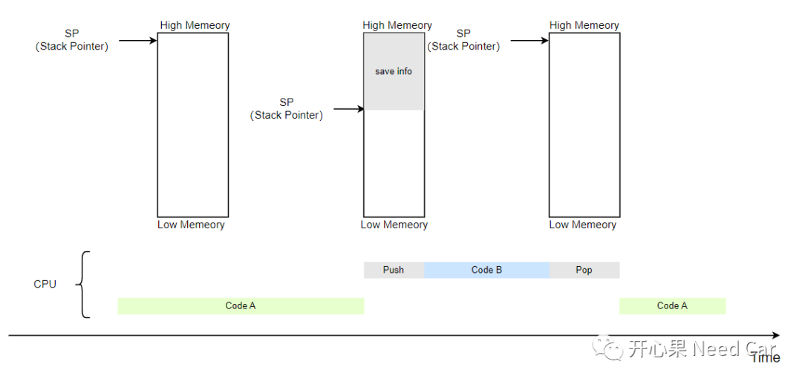
CSA是什么呢？ CSA如何管理呢？ CSA使用示例？
1、CSA是什么呢？
程序执行过程中，发生Task抢占/外部中断/Function Call时，CPU程序通过存储/恢复上下文（Context）信息返回原有程序。如下图，分析如下：某个CPU在执行主程序（Code A）过程中，T0时刻，需要调用另一个程序（Code B）获取某个结果再继续执行主程序。如果CPU要准确的返回到原来主程序，CPU在执行Code B之前，需要先记录CPU此时运行的一些状态信息（eg：当前主程序运行地址、当前程序运行状态等），这个过程就是上下文保存（Save），保存的这些信息，是程序能回到原始状态的基础。当CPU执行完Code B以后，回到原来的运行状态时，需要恢复之前CPU的状态，这个过程称为上下文恢复（Restore）。
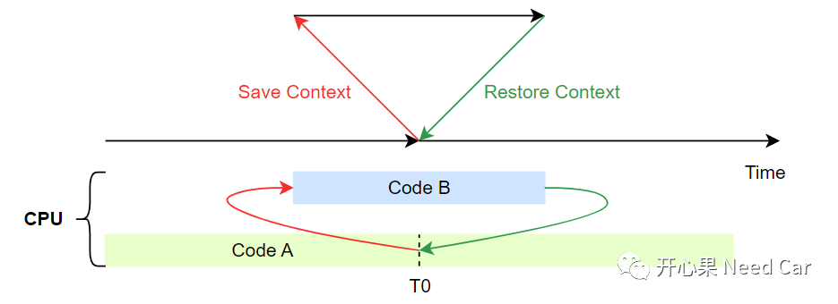
CORE_SEC(.csa) (LCF_DSPR0_START + LCF_CSA0_OFFSET):{PROVIDE(__CSA0 = .);. = . + LCF_CSA0_SIZE;PROVIDE(__CSA0_END = .);} > dsram0
（二）每个CSA存储什么？
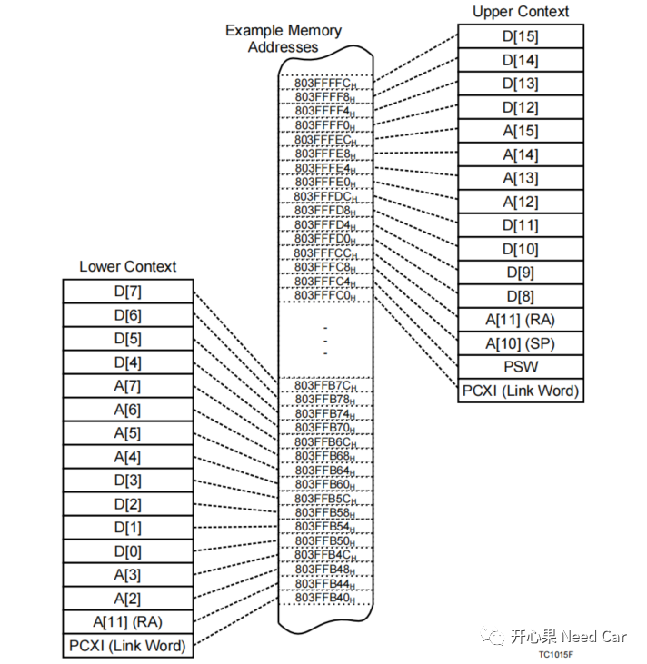
2、CSA管理
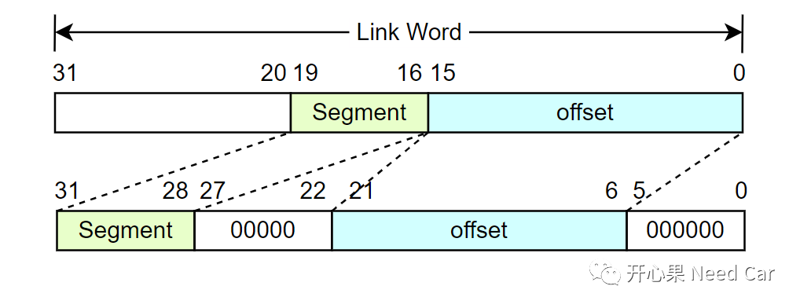
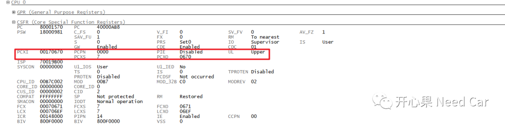
单个CSA容易维护，多个CSA如何管理呢？答：使用单链表方式。在TriCore架构架构中，有三个寄存器用于CSA信息的管理：
PCX：previous context list，指向使用了的CSA链表；
FCX：free context list，指向当前可用的CSA链表；
LCX：Last context，指向链表最后一个CSA区域。

当程序再次被外部中断/Trap/Function Call时，FCX指向CSA4，上/下文信息保存到CSA3，PCX指向CSA3，CSA3链接到CSA2，如下所示：
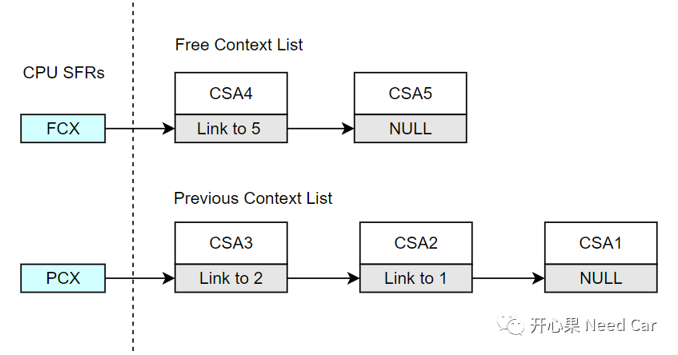
2、Context Restore
当CPU返回时，通过CSA3恢复上/下文信息，CPU返回到上次的运行状态，PCX重新指向CSA2，FCX重新指向CSA3，CSA3再次通过Link Word指向CSA4，如下所示：
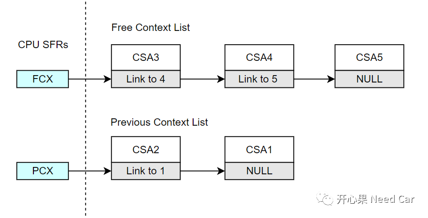
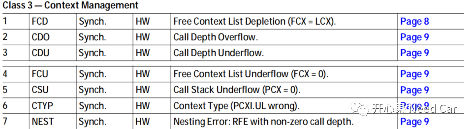
提示：如果使能调用深度检查（Call Depth），最大可以设置调用深度64，该参数设置可以操作PSW（CPUx Program Status Word）寄存器的CDC（Call Depth Counter，bit0~bit6）位域。
如果深度最大64，意味着最多可以保存64个CSA，至少需要划分64*64 = 4096 Byte = 4KByte空间。如果想设置更大的Stack空间，则关闭CDC的检查（设置PSW.CDC = 111111B）。
3、示例
工程开发中，程序在启动时，每个CPU会有一个CSA初始化接口（eg：IfxCpu_initCSA()），此接口执行后，上文或者下文的Link Work则建立好链接（64 Byte对齐），示例如下：
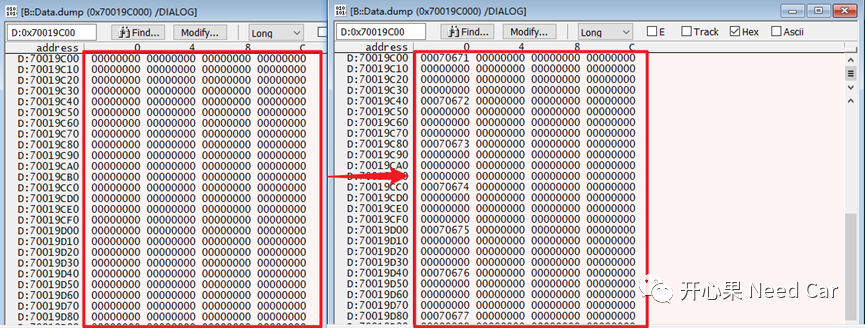
1、程序运行到目标Function Call之前，
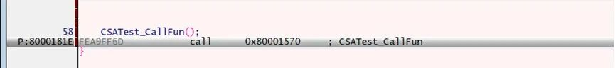
CPU0寄存器信息如下，此时PCXI指向空，即：没有使用CSA，如下所示：
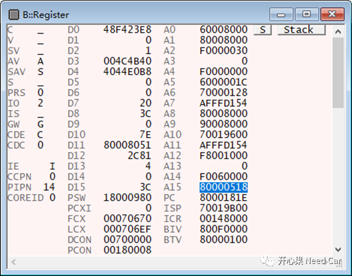
CSA起始位置（0x70019C00）信息，如下所示（之前被使用过）：
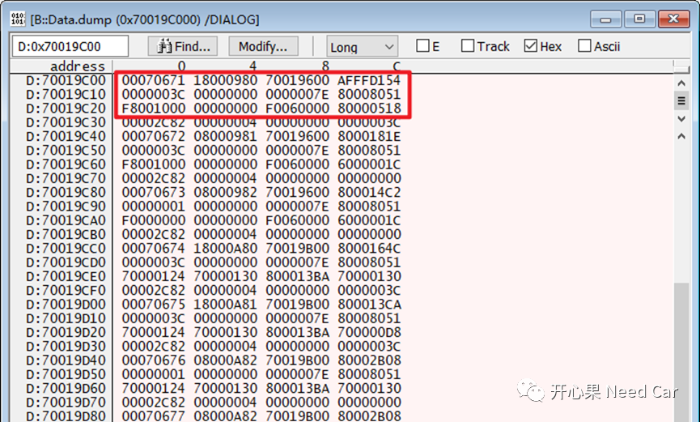
2、CPU0调用目标Function，PCXI指向被使用的CSA区域，FCX指向下一个空闲的CSA区域，LCX指向最后一个CSA区域，如下所示：
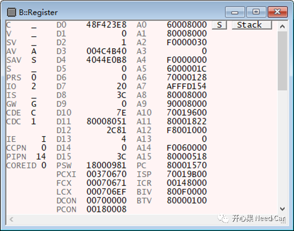
被使用的CSA区域存储的上文信息如下所示，即：没有调用目标Function之前的上文信息。
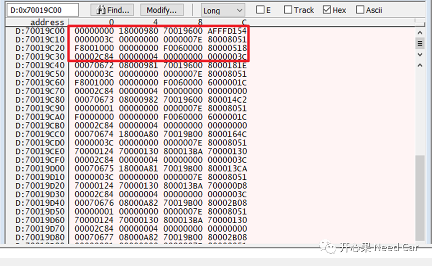
往期精彩回顾
TRACE32调试：基础调试技巧之SystemMode、SNOOPer
Bootloader开发：为什么需要SBL（Secondary Bootloader）?
Autosar EcuM：APP由RUN到POST_RUN浅析